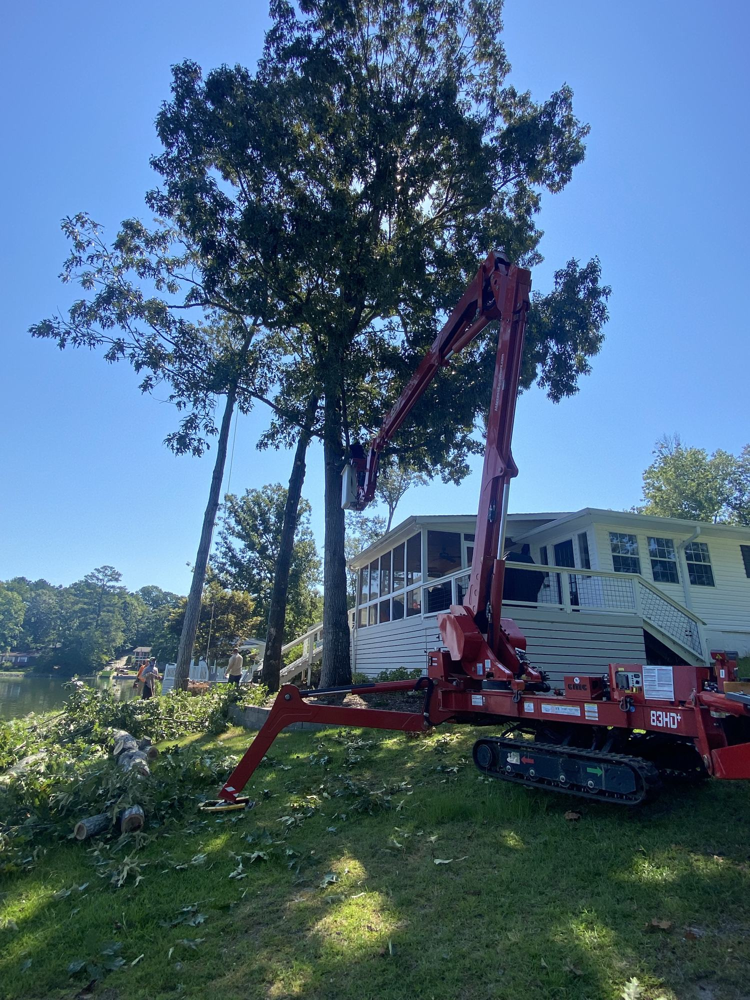
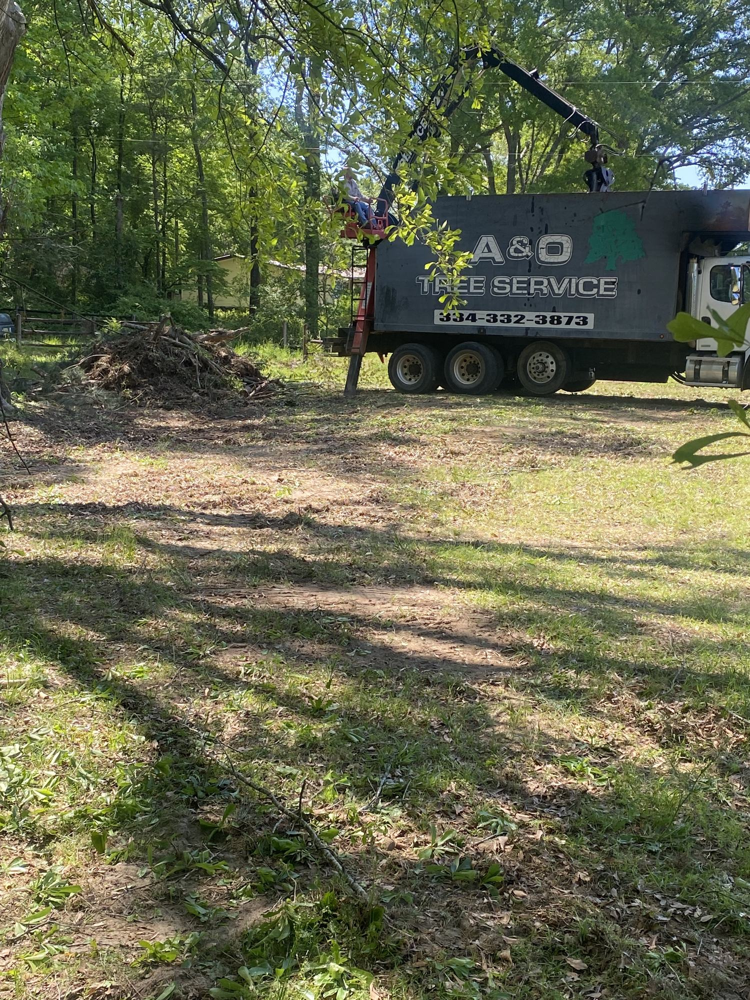

A&O Tree Service LLC is a locally owned, licensed and insured tree service company based in Notasulga, Alabama. The company specializes in dead and dangerous trees and brings over 20 years of experience to difficult tree work.
Request a Free Estimate Call 334-332-3873A&O Tree Service is owned by James Gates and serves homeowners, landowners, and businesses across East Central Alabama.
The company focuses on professional tree removal, storm cleanup, dangerous tree work, stump grinding, brush removal, land clearing, and property cleanup.
When a tree is dead, leaning, storm-damaged, or too close to a home, experience matters. A&O brings the equipment, planning, and care needed to handle difficult jobs safely.

Tree work can affect your home, yard, driveway, fence, utilities, and surrounding property. A&O approaches each job with safety, planning, and cleanup in mind.
Decades of tree service experience on jobs large and small.
Professional service with protection for the work being done.
Based in Notasulga and serving the surrounding Alabama communities.
Clear estimates before the work begins.
Customers call A&O for tree work that requires experience, equipment, and attention to property protection.

Removing dead, damaged, leaning, or unsafe trees near homes and structures.

Careful limb lowering, proper equipment use, and planning around homes and yards.

Debris removal, brush cleanup, and leaving the property ready for use.
A&O Tree Service is owned by James Gates and operates out of Notasulga, Alabama.
The company has built its reputation around difficult tree work, practical communication, fair estimates, and getting the job done right.

A&O Tree Service is based in Notasulga and serves homeowners, landowners, and businesses across the surrounding communities.
Request a free estimate from A&O Tree Service. Licensed, insured, locally owned, and specializing in dead and dangerous trees.
Request a Free Estimate Call 334-332-3873